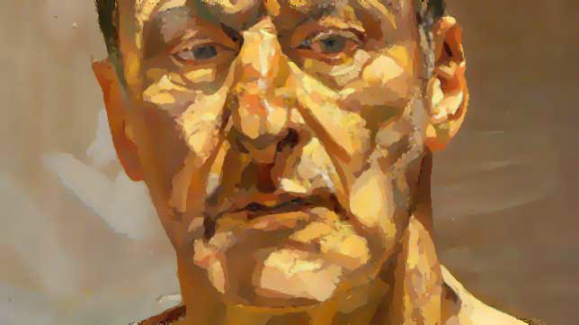
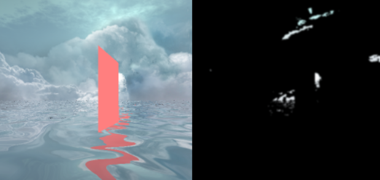
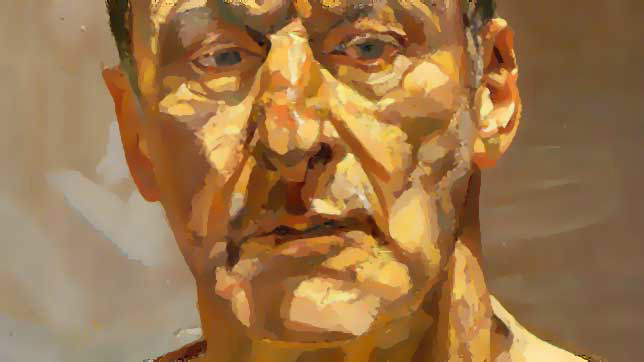
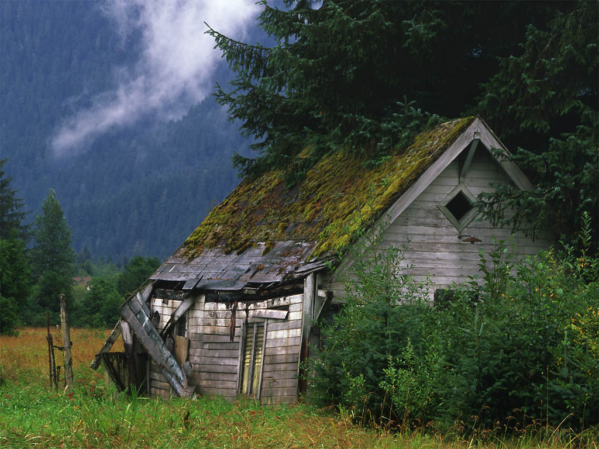
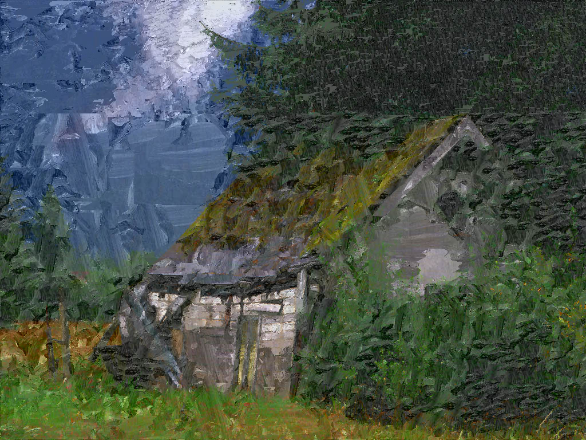

Welcome to my humble web site.
Here's an overview of some of the work I've done...
Final project, a collaboration with my peer Marco Mendez. I personally created the bloom effects and the water effects; my partner was responsible for the multi-textured model.
I am currently in the process of resurrecting the project for the finished image; in the meantime, one of the debugging images for the water and bloom (without the final model) is posted.

The bloom effects are implemented using a Gaussian blur over the highlights of the scene. First, the items are rendered as normal; they are then filtered for the highlights, which are extracted into a separate framebuffer. The highlights are then flipped back and forth between two framebuffers, each time blurring either on the horizontal or vertical axes. The result is then added back to the base image to create the bloom effect.
There were three assignments for this course. For more information, follow the rabbit hole here. The final project was a combination of image processing and an artificial intelligence which attempted to replicate a given art style on an image. The user provides two sample images which establish the art style (one is unstyled, one is styled), as well as an image to be transformed, and the software attempts to replicate the given art style on the final image. This is based on the Image Analogies paper by Hertzman, et. al, found here. The input images were provided here.
Input images:

Target and output images:
 
I'm a personal fan of this language, and so I've been working to create some SDL-based wrappers for OpenGL (as well as various SDL constructs). This can be found here. As this is a work in progress, I will be updating it as I have time to commit.